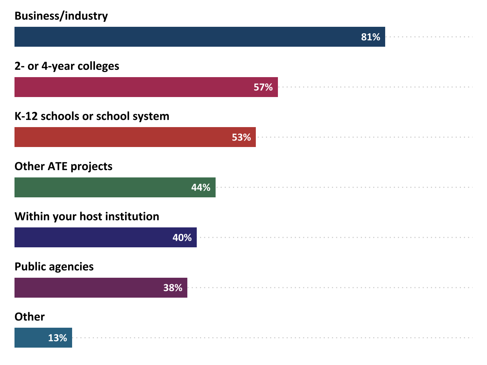
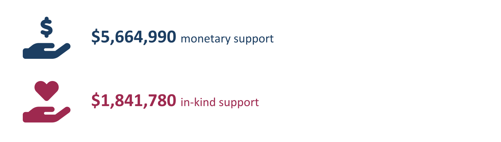
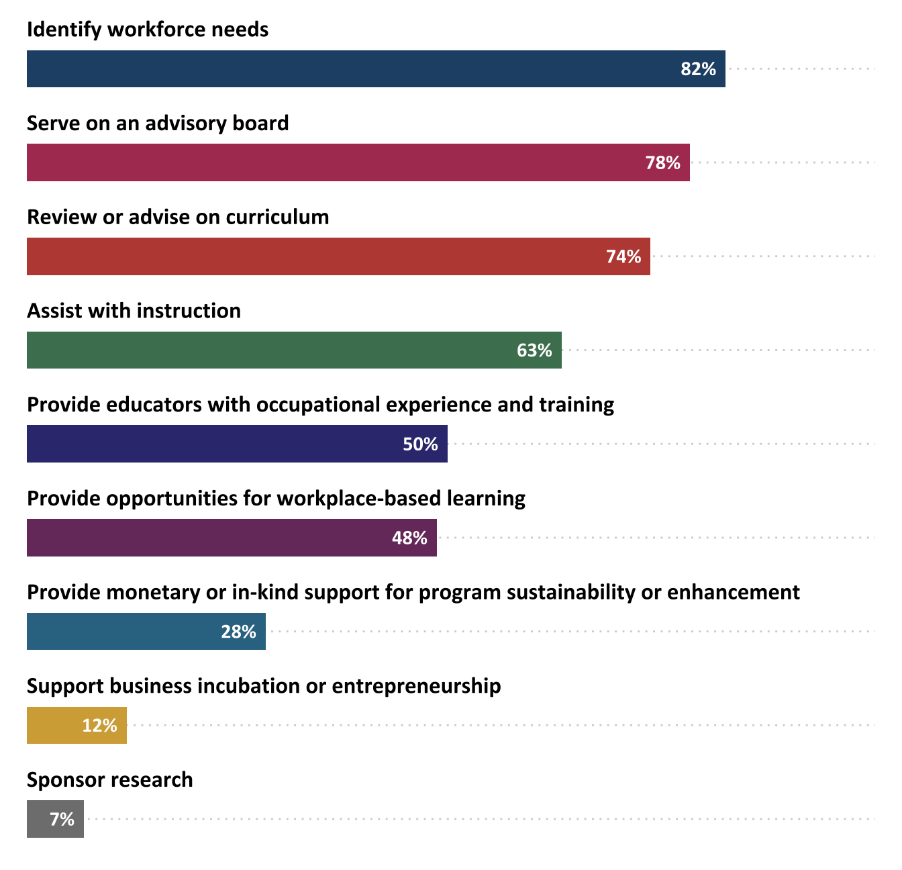

Chapter 10 Collaboration
10.0.0.0.1 NSF encourages ATE projects to partner with other institutions of higher education, secondary schools, businesses, industries, economic development agencies, and/or government agencies. The ATE program solicitation emphasizes the importance of engaging with industry to ensure programs are responsive to workforce needs and leveraging the assets of industry in preparing students for employment (National Science Foundation (NSF), 2021). According to the Brookings Institution, hallmarks of successful community college based workforce training programs include employer involvement in curriculum development and workplace experiences for students (Soliz, 2016).
10.0.0.0.2 ATE PIs were asked about the types of entities with which they collaborated and the benefits of those collaborations, including monetary and in-kind support. Projects that collaborated with business and industry were asked to identify the specific ways in which they worked with these groups.
10.1 Collaboration
10.1.0.1 ATE projects collaborated with 960 other organizations and institutions.
In 2024, ATE projects collaborated with 240 business and industry partners, 160 K–12 schools, 130 colleges, 130 other ATE projects, 120 entities within their host institutions, 110 public agencies, and 40 other types of partners. ATE projects collaborated with a median of Five business and industry groups, Two K–12 schools, Two colleges, and One other ATE project.
10.1.0.1.1 ATE projects most frequently collaborated with business and industry groups, followed by other two- or four-year colleges.

Figure 10.1: Percentage of ATE projects that collaborated with other groups, by type (n=294)
Most projects that indicated they worked with other types of partners identified these collaborators as community organizations and professional associations.
Collaborators provided over $11 million in monetary and in-kind support to 99 ATE projects.

Fifteen percent of projects reported receiving monetary support from collaborators, while 26% reported receiving in-kind support. The median contributions for monetary support and in- kind support across projects were $45,000 and $5,000, respectively. Projects reported that in-kind support primarily consisted of staff time (66%) and equipment (43%). Other types of in-kind support included access to facilities, materials, and supplies.
10.2 Collaboration with Business and Industry
10.2.0.1 Eighty-one percent of ATE projects collaborated with business and industry partners.
A total of 238 projects reported collaborating with business and industry groups. Most used these partners to identify workforce needs, serve on an advisory board, or review and advise on curriculum.

Figure 10.2: Percentage of projects reporting contributions from business and industry partners (n=238)
Business and industry representatives serve on advisory boards for 186 projects. Most of these projects (47%) reported that their advisors from business and industry committed two to five hours per year to their ATE projects.
When asked to identify the benefits of collaborating with different organizations and groups, PIs frequently pointed to the utility of the information that they received from them. For example, one PI noted:
“By collaborating with multiple internal and external partners, … [the] team was able to create a community for support for the… project that increased awareness of the career path and helped increase enrollment.”
Collaborations with industry groups were also noted by PIs as important to project innovation and growth:
“Collaborating with industry allowed us to bridge the gap of what students learn in the classroom compared to applying it in industry… to learn what is new in the industry, what academic and career pathways students should track to get into the career of interest [and] learn how other females navigated traditional male-dominated careers.”